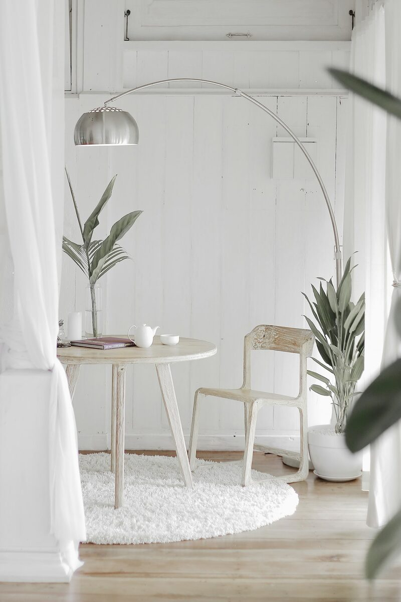

Minimalista
Minimalista
O minimalismo parte de uma ideia simples: cada objeto no ambiente precisa ter função ou significado. A paleta se mantém neutra — branco, cinza, bege e madeira clara — e o mobiliário tem linhas retas, sem ornamentos.
- Mantenha superfícies livres: bancadas e mesas pedem no máximo dois ou três objetos.
- Prefira móveis com portas, que escondem a bagunça do dia a dia.
- Invista em poucas peças de qualidade em vez de muitas peças baratas.
- Use a textura (linho, lã, madeira) para evitar que o espaço fique frio.
É a escolha natural para apartamentos pequenos: a sensação de amplitude vem justamente do vazio controlado.